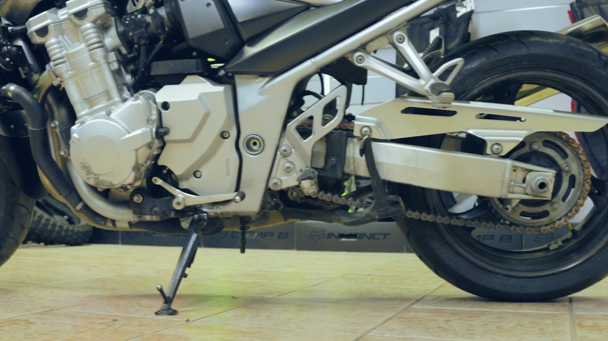
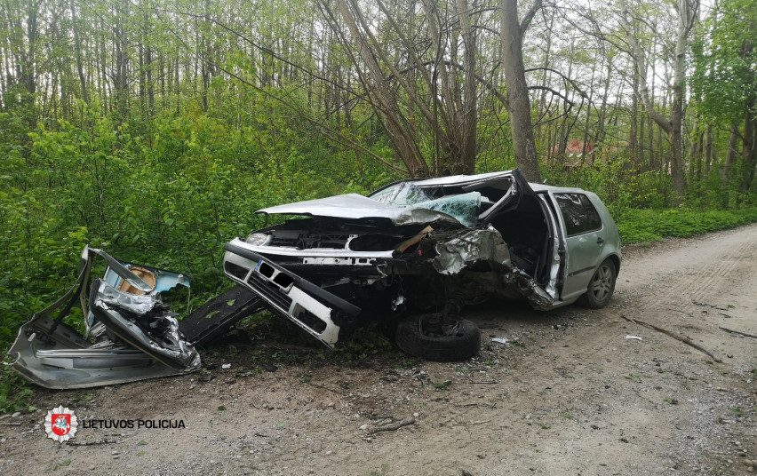

Motokroso motociklų lenktynės per Heloviną - motokroso motociklai
 ZAIDIMAI.LT Nauji žaidimai Karšti Populiariausi Populiariausi Karšti Nauji žaidimai Helovinas Nuotykiu Loginiai Veiksmo Lenktynės Mergaitėms Dviems Su draugais Sportas Kortos Žaidimai
Motokroso motociklų lenktynės per Heloviną
Motociklų lenktynės July 15, 2020Greiti Motokroso motociklai
Linksmos lenktynės su motokroso motociklais. Veiksmo data Helovinas. Motokroso motociklai yra labai manevringi Jūsų pagrindinė užduotis kuo greičiau įveikti sudėtingas distancijas ir trasas. Šie motokroso motociklai yra labai manevringi ir galingi. Jų variklio galia leidžia atlikti tokius triukus kaip mirties kilpa, apsisukti 369 laipsnių ir kitus sudėtingus manevrus. Valdymas: nuspaudus rodykles į priekį motociklas judės į priekį visu greičiu. Rodyklės aukštyn verčia motociklą suktis ratu arba išlaikyti pusiausvyrą. Nepakliūk į spąstus, kelyje gausu kliūčių ir pavojų. Juk vis gi tai Helovino vakaro žaidimas 😱💀👽🤠
Komentuoti žaidimą 😃😊Daugiau žaidimų:
Moliūgų keksiukai, maisto žaidimaiHelovyno moliūgų keksiukai Šios šventės... Lenktynių varžybos mieste - Mašinos
Lenktynių žaidimas su mašina. Mašinų len... Autobusų kontrolierius, įdomus žaidimas
Autobusų kontrolierius - tai ypač įtrauk... Mergaitė Viktorija per Heloviną - Žaidimas
Mergina Viktorija ruošiasi savo Helovino... Lenktynės pajūrį - automobilių lenktynės
Berniukų mašinų lenktynės pajūrį Lenkty... Londono taksi, vairavimo žaidimas
Londono taksi - tai nuotaikingas vairavi... Vandens lenktynės, žaidimas vandenyje
Vandens lenktynės, veiksmo ir sporto žai... Beprotiški triukai, motociklų lenktynės
Motociklas ir beprotiški triukai Tai su... Motociklų lenktynės 2 - Arcade žaidimas
Motociklų žaidimas online. Tai a... Greitoji lenktynės - lenktynės mieste
Lenktynių automobilis trasoje Šis žaidi... Kempiniukas - Žaidimai apie Kempiniuką Plačiakelnį ir j...
Kempiniukas ir jo draugai Žaidimai api... Galingi sunkvežimiai - Monstrai keturračiai
Žaidimas su galingais sunkvežimiais mons... 0 Mėgsta Pasidalinti Šaškės stalo žaidimas Zuikis ir morkos loginis labirintų žaidimas
Rekomenduojama Jums
1621Linksmo Helovino jungimai
October 19, 2020 477Tamsiaplaukės merginos šukuosena
October 19, 2020 309Princesė kaip vampyrė
October 16, 2020 288Helovino parduotuvė, aptarnauk klientus
October 15, 2020 367Zombiai per Heloviną šaudymo žaidimas
October 15, 2020 1477Automobilių driftas rusiškai mašinų žaidimas
July 14, 2020 3358Zombių apokalipsė, zombių žaidimas
October 22, 2019 6144Helovino Ma Džongas, kaladėlių jungimai
October 21, 2019Savaitės populiariausi
Linksmo Helovino jungimai admin October 19, 2020 Vaisių jungimas internete loginiai žaidimai October 19, 2020 Tamsiaplaukės merginos šukuosena October 19, 2020 Katytė ir jos vaikutis žaidimas gyvūnėliai namuose October 18, 2020Jums gali patikti
Įmušk kamuoliuką į skylę, loginis žaidimas
Mažo šuniuko priežiūra žaidimas vaikams
Vienodos kortelės su mahjong paveiksliuku
Zaidimai.lt kontaktai: sveiki@zaidimai.lt | @ teisės priklauso Zaidimai.lt ir portalo gerbiamiems partneriams. Kategorijos Privatumo politika Kontaktai Slapukai Mobili verisija Sapnininkas Visi žaidimai